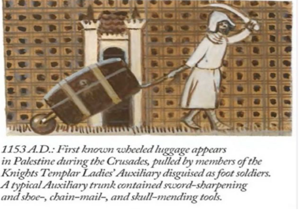
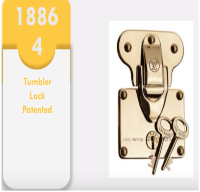
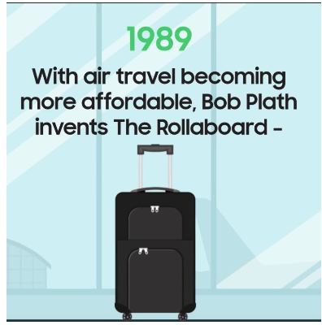
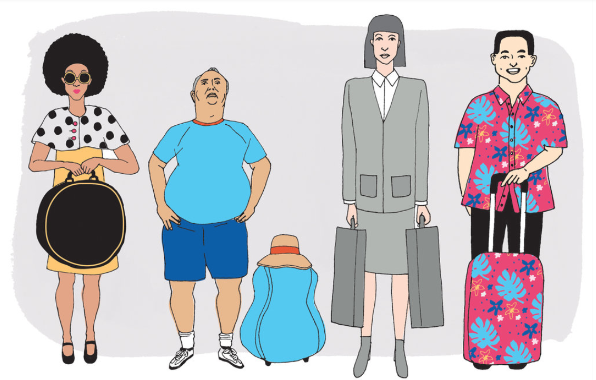
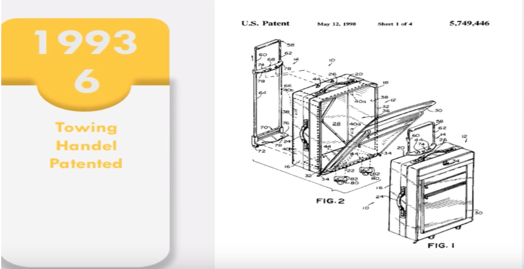
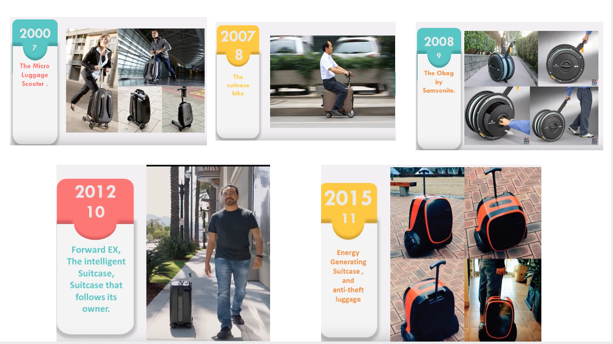

For all time, people traveled to and from various destinations and while doing so, he needed to carry supplies and food to aid his travels. To solve this problem, a suitcase was created.
1153First known wheeled luggage appears in Palestine during war, pulled by the members of knights templar ladies.
1848Wheeled luggage appears again, pulled by an elephant transfering the maharani of Nadir to Durbar.
1800 the modern suitcase begins to take form. They were made of cowhide stretched over wooden frames and built for rugged conditions.
1854 Louis Vuitton designs flat trunk that could be stacked during steamship travel due to its top flat shape. They were built with frames of wood and steel, with leather, wicker or rubberized cloth to cover it.In Verne's day, proper travel required a hefty trunk built of wood, leather, and often a heavy iron base. The best trunks were waterproofed with canvas or tree sap,during the oversea traveling constraintsWithout this protection, a suitcase in the hold of a heaving, leaky ship would probably have been wet within a few hours, and crushed by sliding trunks within a few more.

Vuitton is credited with creating the first slatted trunk The brand also built its reputation around the strength of its luggage locks.
(Early suitcases were lighter and more portable than trunks, but they were still bulky by today's standards. Leather, wicker or thick rubbery cloth was stretched over a rigid wood or steel frame. Corners were rounded out using brass or leather caps. Such suitcases tended to have roughly the proportions of a hardback book: constraints:flattened and easy to carry, with a handle on the long side.
With the increase in the use of automobiles, it has become easy to utilize simple cardboard containers secured at little or no cost, in the back of the automobile in lieu of luggage."Suitcases,in other words, had to get lighter and cheaper if they wanted to compete. The robust wood, steel, and heavy leather suitcase gave way to cardboard and plastic models that emphasized "modern" materials and convenience.
  1974Perhaps one of the greatest inventions in luggage in the 20th century came from Bernard Sadow, who first patented wheeled luggage in 1974. He came up with an idea while he was dragging the heavy suitcases through customs and he saw an airport employee push a cart of luggage in wheels, he crafted the idea of creating the individual wheels for bags and added it to a line of suitcases.
1989 with air travel becoming more affordable bob plath invents the rollaboard. The first widely adopted suitcases with an extendable handle. 1993 towing handle patented. 2000 the micro luggage of the scooter.
 